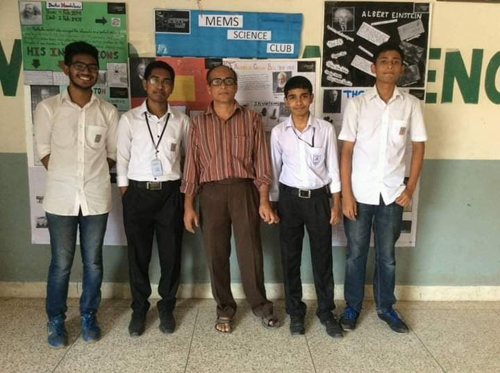
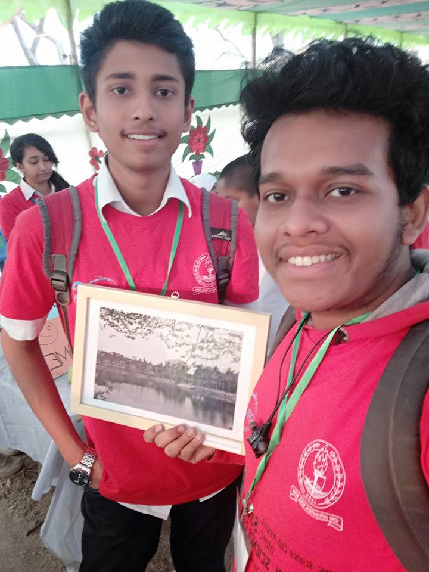
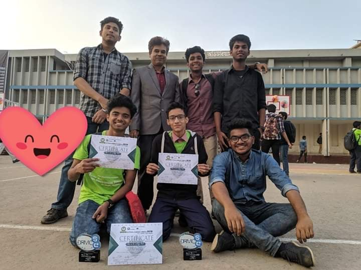
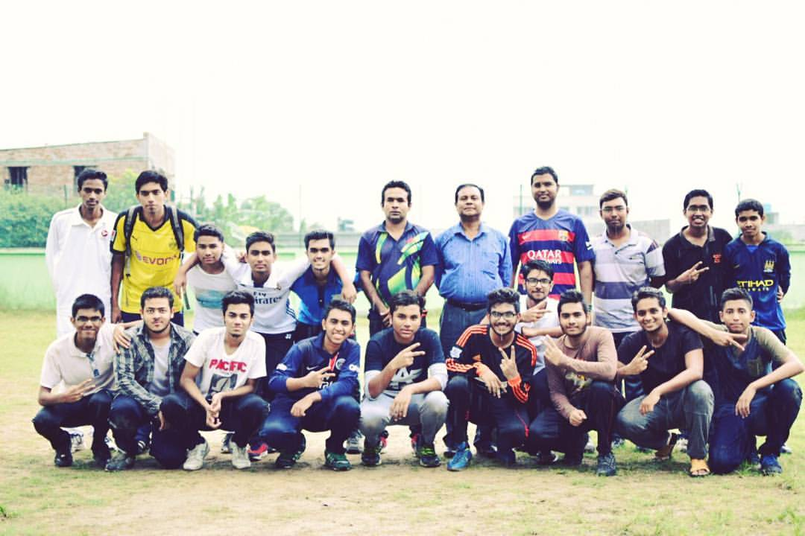
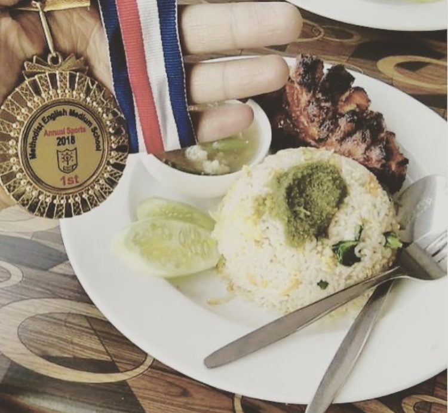
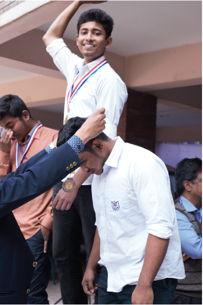

EXTRACURRICULAR

We all know the Extracurricular activities helps raise self-esteem and helps in making contribution as well. So here i'd like to present my extracurricular activities.
At first i was very keen to sports whereas now, i try to devote my full time on projects i am working on. I always had an utmost passion for electrical equipments. And due to this engineering based projects. I even participated on various School Science Fairs and National Science Fairs, even won a National Award which i am immensely proud of. On the other hand, currently along with my projects i am also doing The Harvard Cs50 course which is helping me build another strong position for my future.
And i'm also thinking of doing Youtube videos on my works in the near future, because why not?
Thank You.
SCIENCE FAIR
|  |  |
 |  |
SPORTS
|  |  |  |
 HOME |
 INTRO |
 HOBBY |
EXTRACURRICULAR |
 SOCIAL MEDIA |
|---|